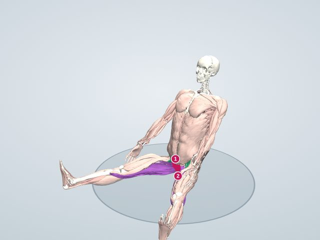

体の不調図鑑
開脚ができない
床に座って脚を左右に開こうとしても大きく開けない、開くと上体が後ろに倒れてしまう状態。股関節まわりの筋の硬さが主な原因です。
3Dで原因の場所と対策を見る 無料で見られます

原因になっている場所
- 内転筋の起始部(恥骨)負担が集中する
脚を開くと、内転筋群が骨盤の付け根から引き伸ばされます。ここが突っぱるのが、開脚で止まる所です。
- ハムストリングスの起始部(坐骨)負担が集中する
もも裏が硬いと、坐骨の付け根から骨盤が後ろへ引かれ、上体が後ろに倒れます。
体の中で起きていること
脚を横に開くと、内転筋群(長内転筋・大内転筋・薄筋・恥骨筋)が伸ばされます。とくに膝を伸ばしたままの開脚では、骨盤から膝の下まで伸びる薄筋やハムストリングスも伸ばされるため、もも裏が硬いと骨盤が後ろに引かれて上体が倒れます。骨盤を前に起こす腸腰筋が働くと、上体を前に倒しやすくなります。筋は、力を入れたあとにゆるめると伸びやすくなる性質があり、この「使う → ゆるめる → 伸ばす」の組み合わせが効果的とされます。
きっかけ
- 内ももの筋(内転筋群)が硬い
- もも裏(ハムストリングス)が硬く、骨盤が後ろに倒れる
- 骨盤を起こす筋(腸腰筋)が弱い
- 股関節の骨の形(開ける角度には生まれつきの個人差もあります)
原因と対策
原因になっている筋の状態を「弱い」「こっている」「縮んでいる」の3つに分け、それぞれに対応する対策(使う・ほぐす・ストレッチ)を組にしています。「中心」は、この不調でとくに大切な組です。
原因縮んで硬くなっている 中心
- 内転筋群(長内転筋・大内転筋・薄筋など)
- ハムストリングス
内転筋群ともも裏が縮んで硬く、脚を開くと骨盤を後ろへ引いて上体が倒れます。
対策ストレッチ
開脚・合せき・前屈で、内ももともも裏をゆっくり伸ばします。
- 開脚
- 床に座って脚を左右に大きく開き、上体を前に倒す。 膝のお皿を上に向けたまま開くと、内ももが伸びます。
おもに内転筋群・ハムストリングス - 合せき(足裏を合わせる)
- 床に座って足の裏を合わせ、膝を床に近づける。 背すじを伸ばしたまま、上体を少し前に倒すとさらに伸びます。
おもに内転筋群(恥骨筋・長内転筋・薄筋) - 長座前屈
- 床に座って脚を前に伸ばし、つま先に向かって上体を倒す。 つま先を手前に引く(足首を曲げる)と、ふくらはぎも一緒に伸びます。
おもにハムストリングス・腓腹筋・脊柱起立筋 - 4の字(右のお尻)
- あお向けで両膝を立て、右の足首を左の太ももにのせて、左脚を胸へ引き寄せる。 右膝を外へ押し開くようにすると、お尻の奥(梨状筋)が伸びます。
おもに梨状筋・大殿筋・中殿筋
原因弱くなっている(うまく使えていない)
- 腸腰筋(大腰筋・腸骨筋)
骨盤を前に起こす腸腰筋の働きが弱い傾向があり、上体を前に倒せません。
対策使う(鍛える)
脚を前に上げる運動で腸腰筋を使い、骨盤を起こす力をつけます。
- 脚を前に上げる(右)
- あお向けで左膝を立て、右脚は膝を伸ばしたまま、ゆっくり持ち上げて下ろす。 脚の前の筋を使うと、反対側のもも裏の筋がゆるみやすくなります(相反抑制)。腰が反らない高さまで。
おもに腸腰筋・大腿直筋
原因緊張が続いて、こっている
- 内転筋群(長内転筋・大内転筋・薄筋など)
- ハムストリングス
伸ばされると身構えて、内ももともも裏に力が入ったままになっています。
対策ほぐす
力を入れてから抜く(PNF)と、筋がゆるんで伸びやすくなります。さすってほぐすのも効果的です。
- 力を入れてから伸ばす(PNF)
- 合せきや開脚の姿勢で、膝を閉じるように内ももに5秒ほど力を入れ(手で押さえて脚は動かさない)、力を抜いて息を吐きながら伸ばす。力を入れたあとの筋はゆるみやすくなります。
対象: 内転筋群(長内転筋・大内転筋・薄筋など) - 内もも(内転筋群)
- 床に座って片膝を外へ倒し、膝の内側から脚の付け根に向かって、手のひらで押しながらさする。
対象: 内転筋群(長内転筋・大内転筋・薄筋など) - もも裏(ハムストリングス)
- いすに座って太ももの裏の下にボールを置き、膝の曲げ伸ばしをくり返す。
対象: ハムストリングス
アプリでは、それぞれの対策の動きで使われる筋(赤)・伸ばされる筋(青)を3Dで再生し、ほぐす場所を表示できます。
生活の工夫
- お風呂上がりなど、体が温まっているときに伸ばす
- 反動をつけず、20〜30秒かけてゆっくり
- 毎日少しずつ続ける(数週間〜数か月かけて変わっていきます)
こんなときは医療機関へ
股関節や脚の付け根が痛む、引っかかる感じがある場合は、無理に開かず整形外科に相談してください。
ここで紹介しているのは一般的な情報で、診断や治療の代わりにはなりません。痛みやしびれがあるとき、症状が続くときは医療機関を受診してください。ストレッチや運動は痛みのない範囲で行い、痛みが強くなる場合は中止してください。